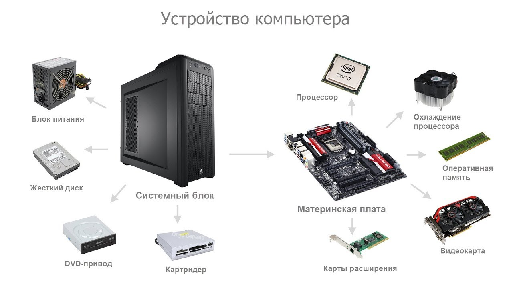
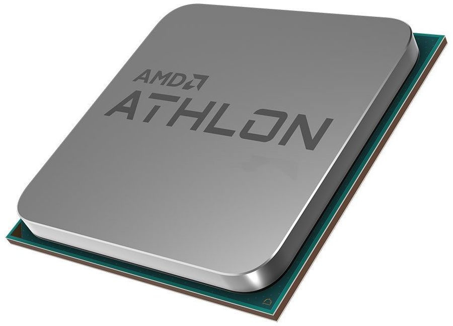
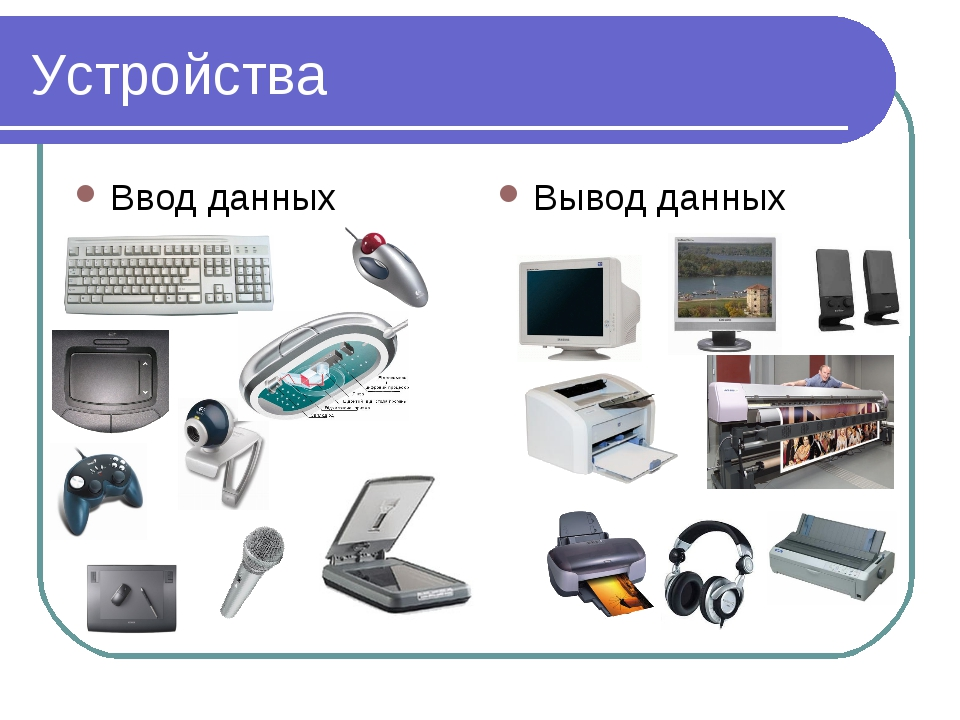
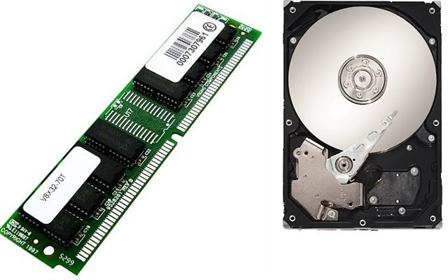
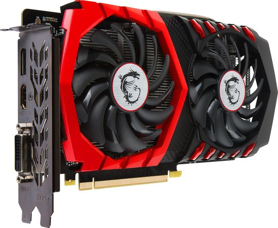
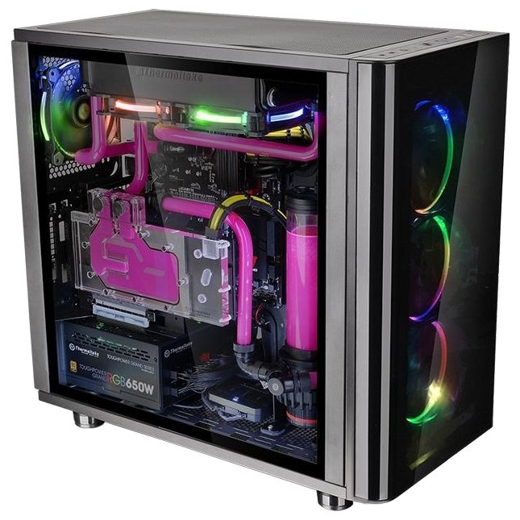

В XXI веке компьютеры встречаются во всех сферах нашей жизни. Почти в каждом доме есть компьютер, но как он работает?
Что такое компьютер?
XXI век - это время невероятных открытий. Время мобильных телефонов, Интернета. Время, когда услуги и товары приходят в нашу жизнь и наш дом через онлайн-сервисы. Когда появился сотовый телефон, были не только поклонники этого устройства, но и противники. А сегодня гаджеты незаменимы.
Компьютер – универсальное электронное устройство для обработки данных. Универсальный он потому, что способен осуществлять поиск, обработку, передачу и хранение различных сведений из мира информации.
Какие виды работ выполняет компьютер?
Благодаря различиям во внешнем виде, а также возможностям и предназначениям выделяют следующие виды персональных компьютеров: настольные и переносные.
К переносным компьютерам относятся ноутбуки. Они могут работать где угодно, имеют маленькие размеры и вес. Можно решить, что они гораздо лучше стационарных, однако это не совсем так. Во-первых, ноутбуки существенно дороже обычных компьютеров. А во-вторых, без подключения к электричеству они работают не более 10 часов.
Применение компьютера в современной жизни
Применение компьютера в различных сферах способно адаптировать умственные нагрузки человека к большим объемам информации. Это помощник как для школьника, так и для специалиста любой профессии. Компьютеры помогают регулировать работу медицинских учреждений, магазинов, образовательных учреждений, киностудий, научных лабораторий, банков и типографий.
Устройства компьютера
Компьютер состоит из следующих устройств:
- устройства ввода информации в компьютер (микрофон, мышь, джойстик, клавиатура, сканер);
- устройство обработки (процессор);
- устройства вывода (наушники, монитор, колонки, принтер);
- устройства хранения (жесткий диск, оперативная память).
Что такое процессор?
Дадим определение процессору. Процессор - устройство, управляющее вычислениями, от него подаются команды всем частям компьютера. Тактовая частота процессора, разрядность, и адресное определяют характерные особенности процессора. Частота процессора определяет быстродействие компьютера, это объем операций, производимых за 1 секунду. Единица измерения - мегагерцы. Разрядность процессора влияет на производительность. Высокая разрядность дает высокую производительность. Если заглянуть в открытый системный блок современного компьютера, то ты вряд ли смог увидеть процессор, он изолирован системой охлаждения. Для охлаждения используются кулер и радиатор.
Устройства ввода и вывода информации в компьютер
Основными устройствами ввода и вывода информации в компьютер являются: клавиатура, мышь, монитор, колонки.
Виды памяти компьютера

К видам памяти компьютера относятся оперативная память и жесткий диск.
Оперативная память — это разновидность внутренней памяти компьютера, представляющая собой плату с рядом микросхем, которая хранит данные во время работы компьютера. Чтобы решить все поставленные задачи, необходим хороший объем оперативной памяти.
Жесткий диск, или винчестер, - это устройство памяти компьютера, которое позволяет долговременно хранить данные. При выключении питания потеря данных на винчестере не происходит. Винчестер получил такое название, потому что первый жесткий диск был рассчитан на два устройства емкостью 30 мегабайт каждое. Обозначение такого диска записывалось 30/30 каждое, что соответствовало обозначению известного охотничьего ружья винчестер. Это название очень понравилось компьютерщикам и быстро прижилось.
Что такое видеокарта?
Чтобы информация, поступающая в компьютер, могла быть представлена в виде изображений, необходима видеокарта. Что делает видеокарта? Видеокарта управляет работой монитора, создает на нем изображение по инструкции, получаемой от процессора. Современным компьютерам требуются на столько мощные видеокарты, что их приходится оснащать системой охлаждения.
Что такое системный блок и для чего он нужен?
Сердцем компьютера является системный блок, который нужен для совмещения основных и дополнительных компонентов компьютера. Системный блок объединяет в корпусе блок питания, видеокарту, дисковод, винчестер, материнскую плату, различные порты и оперативную память. У ноутбуков системный блок совмещен с клавиатурой, а порты для подключения располагаются сбоку.